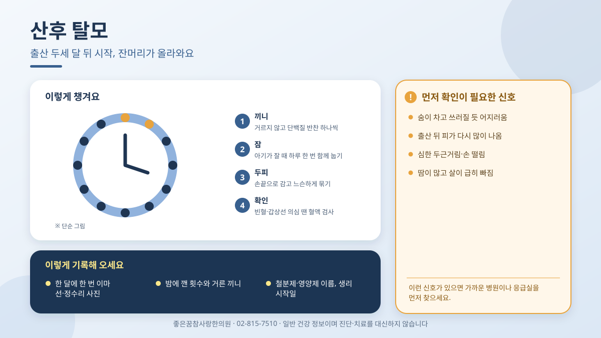

이종호 한의사 감수좋은꿈참사랑한의원 대표원장 (한의사 면허번호 19769)발행 2026-11-26 · 수정 2026-11-26
이 글의 차례
아기를 재우고 겨우 샤워를 하는데, 머리를 헹구던 손가락 사이로 머리카락이 뭉텅이로 딸려 나옵니다. 배수구에 쌓인 머리카락을 손으로 걷어 내며 거울을 보니 이마 양옆이 휑해 보입니다. 아기 이불 위에도, 수유 쿠션에도 긴 머리카락이 떨어져 있습니다.
출산하고 몇 달 지난 분들이 진료실에서 머리카락 이야기를 꺼내실 때는 목소리가 조금 떨립니다. 몸도 마음도 지친 시기에 거울 속 모습까지 달라지니 서글프다고 하십니다. 혹시 이대로 계속 빠지는 건 아닐까 하는 걱정도 큽니다.
먼저 말씀드리고 싶은 것은, 출산 뒤 머리카락이 많이 빠지는 일은 매우 흔하다는 점입니다. 많은 분이 비슷한 시기에 비슷한 모습을 겪고, 대부분은 시간이 지나며 새 머리카락이 올라옵니다. 그 과정을 알고 나면 걱정이 조금은 가벼워집니다.
이 글에서는 산후 탈모가 왜 생기는지, 어떤 흐름으로 지나가는지, 그리고 다른 원인이 겹쳐 있지 않은지 무엇을 함께 확인해야 하는지 차례로 정리했습니다. 한의원에서 함께 살필 수 있는 부분도 덧붙였습니다.
산후 탈모는 언제 시작되고 언제까지 이어지나요?
산후 탈모는 출산 직후보다 출산하고 두세 달쯤 지나 시작되는 경우가 많습니다. 아기가 백일 무렵일 때 머리카락이 부쩍 빠진다고 말씀하시는 분이 많은 것도 그래서입니다. 머리를 감거나 빗을 때 빠지는 양이 평소보다 눈에 띄게 늘어납니다.
빠지는 양이 많은 시기는 대개 몇 달 동안 이어지다가 차츰 줄어듭니다. 그 사이 이마 선과 정수리 쪽에 짧고 가는 머리카락이 삐죽삐죽 올라오는 것이 보이기 시작합니다. 이 잔머리가 바로 새로 자라는 머리카락입니다.
숱이 예전처럼 보이기까지는 그보다 더 시간이 걸립니다. 새 머리카락이 어느 정도 길이가 되어야 숱이 차 보이기 때문에, 출산 뒤 1년 안팎을 두고 천천히 지켜본다고 생각하시면 마음이 조금 편합니다. 속도는 사람마다 다릅니다.
왜 출산 뒤에 머리카락이 많이 빠질까요
머리카락은 자라는 시기와 쉬는 시기, 빠지는 시기를 번갈아 거칩니다. 평소에는 이 시기들이 머리카락마다 제각각이라 하루에 빠지는 양이 일정하게 유지됩니다. 그런데 임신 중에는 호르몬의 영향으로 자라는 시기에 머무는 머리카락이 늘어납니다.
그래서 임신 중에는 오히려 머리숱이 많아졌다고 느끼는 분이 많습니다. 원래라면 빠졌을 머리카락이 그대로 붙어 있었던 셈입니다. 출산 뒤 호르몬이 원래대로 돌아가면, 그동안 미뤄 두었던 머리카락들이 비슷한 시기에 한꺼번에 쉬는 시기로 넘어갑니다.
쉬는 시기에 들어간 머리카락은 몇 달 뒤 빠집니다. 출산하고 바로가 아니라 두세 달 뒤에 탈모가 시작되는 것은 이 시간차 때문입니다. 그러니 이때 빠지는 머리카락은 대부분 새로 자랄 자리를 내어 주는 머리카락입니다.
여기에 출산 뒤의 생활이 더해집니다. 쪼개진 잠, 급하게 때우는 식사, 출혈 뒤 떨어진 철분, 수유로 늘어난 영양 필요량, 아기를 돌보는 긴장이 겹치면 머리카락이 다시 자라는 데 필요한 재료와 여유가 부족해집니다. 한의학에서는 이 시기를 혈이 크게 쓰이고 부족해지기 쉬운 때로 봅니다.
다른 탈모와는 어떻게 다를까요?
산후 탈모는 대개 머리 전체에서 고르게 빠지고, 특히 이마 양옆과 관자놀이 쪽이 휑해 보이는 경우가 많습니다. 빠진 머리카락 끝을 보면 하얀 뿌리가 동그랗게 붙어 있는데, 쉬는 시기를 마치고 자연스럽게 빠진 머리카락의 모습입니다.
동전처럼 한두 군데가 동그랗게 비고 그 자리 피부가 매끈하게 드러난다면 원형 탈모를 먼저 생각해 봅니다. 원형 탈모는 출산 뒤에도 생길 수 있지만 흐름과 살피는 방법이 다르므로 피부과에서 확인받으시는 것이 좋습니다.
정수리 가르마가 해마다 조금씩 넓어지는 모습이라면 여성형 탈모가 함께 있을 수 있습니다. 출산 전부터 가르마가 넓어지고 있었다거나 가족 가운데 비슷한 분이 있다면 진료실에서 말씀해 주세요. 산후 탈모가 지나간 뒤에도 숱이 돌아오지 않는다면 이 가능성을 함께 봅니다.
머리카락뿐 아니라 쉽게 지치고 어지럽거나, 추위를 많이 타고 붓거나, 반대로 심장이 두근거리고 땀이 많고 살이 빠진다면 빈혈이나 갑상선 문제를 함께 확인해야 합니다. 출산 뒤에는 갑상선 기능이 잠시 흔들리는 경우도 있어서, 이런 불편이 겹치면 혈액 검사를 권합니다.
머리카락에 관해 자주 듣는 오해
머리를 자주 감으면 더 빠진다고 생각해 감는 횟수를 줄이시는 분이 있습니다. 그러나 감을 때 빠지는 머리카락은 이미 빠질 준비를 마친 것이라, 감지 않으면 다음에 한꺼번에 빠질 뿐입니다. 두피를 깨끗하게 유지하는 편이 두피에는 더 편합니다.
머리를 짧게 자르면 덜 빠진다는 말도 있습니다. 자르는 것이 빠지는 양을 바꾸지는 않지만, 짧은 머리는 빠진 머리카락이 덜 눈에 띄고 손질이 쉬워 마음이 조금 편해질 수 있습니다. 아기가 머리카락을 잡아당기는 시기에도 도움이 됩니다.
특정 음식 하나를 많이 먹으면 머리가 난다는 이야기도 자주 듣습니다. 머리카락은 고른 식사와 충분한 잠 위에서 자랍니다. 한 가지에 기대기보다 끼니를 거르지 않는 것이 먼저입니다.
비싼 샴푸나 두피 제품을 바꾸면 빠지는 양이 확 줄어들 것이라 기대하시는 분도 있습니다. 순한 제품으로 두피를 편하게 해 주는 정도로 생각하시고, 두피가 따갑거나 붉어지는 제품은 바로 멈추세요.
두피와 머리카락을 대하는 작은 습관
빗은 끝이 둥글고 살이 성긴 것을 고르고, 머리카락 끝부터 살살 풀어 가며 위로 올라가듯 빗습니다. 엉킨 머리를 뿌리부터 한 번에 잡아 내리면 아직 붙어 있어야 할 머리카락까지 당겨집니다.
파마나 염색은 두피가 예민해진 시기에는 잠시 미뤄 두시길 권합니다. 꼭 하고 싶다면 두피에 상처나 붉은 기운이 없을 때, 수유 중이라는 것을 미용실에 미리 말씀해 주세요. 두피에 약제가 오래 닿지 않도록 시간을 짧게 잡는 편이 좋습니다.
모자를 오래 쓰거나 머리를 꽉 묶은 채 잠드는 습관도 두피를 답답하게 합니다. 집에서는 머리를 풀어 두피에 바람이 통하게 하고, 잘 때는 부드러운 끈으로 느슨하게 한 번만 묶어 두세요.
마음이 지칠 때는 그 이야기도 해 주세요
머리카락이 빠지는 시기는 산후 우울감이 찾아오기 쉬운 때와 겹칩니다. 거울을 보기 싫어지고 외출이 꺼려지며, 사소한 일에도 눈물이 난다면 머리카락 이야기와 함께 마음 이야기도 들려주세요. 둘은 서로 떨어진 문제가 아닌 경우가 많습니다.
주변에 도움을 청하는 것도 회복의 한 부분입니다. 가족에게 하루 한 시간이라도 아기를 맡기고 혼자 걷거나 씻는 시간을 가져 보세요. 짧은 시간이라도 온전히 나를 위해 쓰는 경험이 쌓이면, 거울 앞에서 드는 마음도 조금씩 달라집니다.
머리카락 때문에 사진 찍기를 피하게 된다는 분도 계십니다. 그래도 아기와 함께한 지금의 사진은 나중에 소중한 기록이 됩니다. 모자나 머리띠로 이마 선을 가볍게 가리는 것도 좋은 방법입니다.
먼저 이렇게 여쭙니다
처음 오시면 저는 대략 이런 순서로 여쭙니다. 미리 생각해 오시면 이야기가 훨씬 수월해집니다.
- 출산은 언제 하셨고, 머리카락이 많이 빠지기 시작한 것은 언제인가요?
- 전체적으로 숱이 줄었나요, 한 군데가 동그랗게 비었나요?
- 출산 때 출혈이 많았다는 말을 들으셨나요? 빈혈 검사는 받으셨나요?
- 수유 중이신가요? 철분제나 영양제를 드시나요?
- 밤에 몇 번 깨고, 하루 끼니는 몇 번 챙기시나요?
- 쉽게 지치거나 추위를 타거나 가슴이 두근거리는 느낌이 있나요?
모든 질문에 정확히 답하지 못하셔도 괜찮습니다. 최근 혈액 검사 결과지와 드시는 약, 영양제 이름만 가져오셔도 이야기의 절반은 시작된 셈입니다.
출산 전 머리숱과 두피 상태, 임신 전 생리 주기가 규칙적이었는지, 가족 가운데 탈모가 있는 분이 있는지도 함께 여쭙니다. 이런 이야기는 지금의 탈모가 출산 뒤의 흐름인지, 다른 원인이 겹쳐 있는지를 가늠하는 데 도움이 됩니다.
일상에서 먼저 해 볼 수 있는 것
산후 탈모는 시간이 지나며 지나가는 경우가 많지만, 그 사이 몸이 다시 머리카락을 키울 바탕을 마련해 주는 것은 내가 할 수 있는 일입니다.
- 끼니를 거르지 않고 단백질 반찬을 한 가지씩 곁들이기
- 철분이 많은 고기, 생선, 달걀, 짙은 녹색 채소를 골고루
- 아기가 잘 때 하루 한 번은 같이 눕기
- 머리를 감을 때는 손톱 대신 손끝으로 부드럽게 두피 씻기
- 젖은 머리는 수건으로 비비지 말고 눌러 물기 빼기
- 머리를 너무 세게 묶지 말고 느슨하게 묶기
드라이어는 너무 뜨거운 바람을 두피 가까이 오래 대지 않는 것이 좋습니다. 미지근한 바람으로 두피부터 말리고, 머리카락 끝은 조금 떨어져서 말립니다. 젖은 채로 바로 누우면 두피가 눅눅해져 가려움이 생기기 쉽습니다.
영양제는 이것저것 더하기 전에 지금 드시는 것을 정리해 보세요. 철분제를 이미 드시는데 비슷한 성분을 또 더하면 속이 불편하거나 변비가 심해질 수 있습니다. 수유 중이라면 영양제를 새로 고를 때 산부인과나 약국에 수유 중이라고 말씀해 주세요.
마음의 부담도 줄여 보세요. 빠진 머리카락을 하나하나 세면 걱정이 더 커집니다. 빠지는 양을 매일 세기보다, 한 달에 한 번 같은 조명에서 이마 선과 정수리 사진을 찍어 두고 비교하는 편이 흐름을 보기 쉽습니다.
한의원에서 함께 살필 수 있는 경우
- 출산 뒤 머리카락이 많이 빠지면서 쉽게 지치고 어지러운 경우
- 잠이 쪼개진 뒤로 기운이 없고 식사를 제대로 챙기기 어려운 경우
- 땀이 많고 손발이 시리며 몸이 쉽게 차가워지는 경우
- 두피에 열감이 있고 가렵거나 각질이 많은 경우
- 몇 달이 지나도 빠지는 양이 줄지 않아 걱정이 큰 경우
좋은꿈참사랑한의원에 오시면 먼저 아래 '먼저 확인이 필요한' 신호가 없는지부터 봅니다. 그다음 맥을 짚고 두피를 직접 보며, 잠과 식사, 땀, 대소변, 생리 회복 여부를 여쭙니다. 혈액 검사가 필요해 보이면 내과나 산부인과 검사를 먼저 권합니다.
진찰한 내용을 바탕으로 생활에서 바꿔 볼 것 하나와 함께 침, 두피 주변 관리, 한약 상담 가운데 지금 상태에 맞는 것을 정합니다. 한약은 수유 중인지, 드시는 약과 영양제를 모두 확인한 뒤 신중하게 정합니다. 처방받아 드시는 약은 상의 없이 멈추지 않습니다.
다음 임신 가능성이 있거나 계획 중이시라면 먼저 알려 주세요. 그럴 때는 산부인과와 상의한 뒤 방향을 정합니다. 원형 탈모나 두피 질환이 의심되면 피부과 진료와 함께 가시도록 안내합니다.
이렇게 기록해 오시면 상담이 쉬워집니다
머리카락은 하루하루보다 몇 주 단위로 달라집니다. 한 달 정도만 간단히 적어 보세요.
- 한 달에 한 번 같은 조명에서 찍은 이마 선과 정수리 사진
- 머리를 감을 때 빠지는 양이 많았던 주와 적었던 주
- 잠든 시각과 밤에 깬 횟수
- 하루 끼니 수와 거른 끼니
- 생리가 다시 시작된 날
- 드시는 철분제와 영양제 이름
사진을 나란히 놓고 보면 잔머리가 올라오는 모습이 눈에 보이기 시작합니다. 그 변화를 함께 확인하는 것만으로도 걱정이 꽤 줄어드는 경우가 많습니다.
지나가는 시기라는 것을 기억해 주세요
거울을 볼 때마다 마음이 쓰이는 시기입니다. 그래도 지금 빠지는 머리카락 상당수는 새로 자랄 자리를 내어 주는 것이라는 점을 기억해 주세요. 이마 선에 올라오는 잔머리가 그 증거입니다.
이번 주에는 거른 끼니 하나를 챙기는 것, 혹은 아기와 함께 낮에 한 번 눕는 것 하나만 골라 보세요. 다음에 오시면 사진과 기록부터 함께 펼쳐 보겠습니다.
이런 증상은 먼저 확인이 필요합니다
- 머리카락과 함께 숨이 차고 어지러워 쓰러질 것 같거나, 출산 뒤 피가 다시 많이 나오는 경우
- 가슴이 심하게 두근거리고 손이 떨리며 땀이 비 오듯 나고 살이 급히 빠지는 경우
이런 신호가 있으면 한의원보다 가까운 병원이나 응급실을 먼저 찾으세요.
함께 읽으면 좋은 글
- 출산 뒤 몸 회복, 관절·땀·잠·기분은 무엇부터 살피나요?
- 정수리와 이마 선이 점점 비어 보이는 남성형·여성형 탈모는 어떻게 살피나요?
- 동전 모양으로 머리카락이 빠지는 원형 탈모는 어떻게 살피나요?
- 빈혈이 있다는 말을 듣고 어지럽고 쉽게 지칠 때, 철분과 생활은 어떻게 살피나요?
- 갑상선 기능 저하나 항진이 있을 때 한의원 진료는 어떻게 함께 살피나요?

여쭙는 것
- 출산은 언제 하셨고, 머리카락이 많이 빠지기 시작한 것은 언제인가요?
- 전체적으로 숱이 줄었나요, 한 군데가 동그랗게 비었나요?
- 출산 때 출혈이 많았다는 말을 들으셨나요? 빈혈 검사는 받으셨나요?
생활에서 해 볼 것
- 끼니를 거르지 않고 단백질 반찬을 한 가지씩 곁들이기
- 철분이 많은 고기, 생선, 달걀, 짙은 녹색 채소를 골고루
- 아기가 잘 때 하루 한 번은 같이 눕기
한의원에서 함께 살필 것
- 출산 뒤 머리카락이 많이 빠지면서 쉽게 지치고 어지러운 경우
- 잠이 쪼개진 뒤로 기운이 없고 식사를 제대로 챙기기 어려운 경우
- 땀이 많고 손발이 시리며 몸이 쉽게 차가워지는 경우
먼저 확인이 필요한 신호
- 머리카락과 함께 숨이 차고 어지러워 쓰러질 것 같거나, 출산 뒤 피가 다시 많이 나…
- 가슴이 심하게 두근거리고 손이 떨리며 땀이 비 오듯 나고 살이 급히 빠지는 경우
한눈에 보는 표
| 구분 | 핵심 |
|---|---|
| 여쭙는 것 | 출산은 언제 하셨고, 머리카락이 많이 빠지기 시작한 것은 언제인가요? 전체적으로 숱이 줄었나요, 한 군데가 동그랗게 비었나요? |
| 생활에서 해 볼 것 | 끼니를 거르지 않고 단백질 반찬을 한 가지씩 곁들이기 철분이 많은 고기, 생선, 달걀, 짙은 녹색 채소를 골고루 |
| 한의원에서 함께 살필 것 | 출산 뒤 머리카락이 많이 빠지면서 쉽게 지치고 어지러운 경우 잠이 쪼개진 뒤로 기운이 없고 식사를 제대로 챙기기 어려운 경우 |
| 먼저 확인이 필요한 신호 | 머리카락과 함께 숨이 차고 어지러워 쓰러질 것 같거나, 출산 뒤 피가 다시 많이 나오는 경우 가슴이 심하게 두근거리고 손이 떨리며 땀이 비 오듯 나고 살이 급히 빠지는 경우 |
자주 묻는 질문
산후 탈모는 언제쯤 멈추나요?
대개 출산 뒤 두세 달 무렵 시작해 몇 달에 걸쳐 차츰 줄어드는 흐름이 흔합니다. 숱이 차 보이기까지는 더 걸리고 사람마다 다르니, 몇 달이 지나도 줄지 않으면 진료실에서 다른 원인을 함께 확인해 보세요.
수유를 하면 머리카락이 더 빠지나요?
수유 자체보다 수유로 늘어난 영양 필요량과 쪼개진 잠이 영향을 줄 수 있습니다. 수유를 이어 가면서 끼니와 잠을 챙기는 방법을 함께 찾아봅니다.
머리를 자주 감으면 더 빠지지 않나요?
감을 때 빠지는 머리카락은 이미 빠질 준비를 마친 것이라 감는 횟수가 빠지는 양을 바꾸지는 않습니다. 두피를 깨끗하게 유지하고 손끝으로 부드럽게 씻으시길 권합니다.
수유 중인데 한약 상담을 받아도 되나요?
수유 중이라는 것과 드시는 약, 영양제를 먼저 알려 주세요. 모두 확인한 뒤 신중하게 정하고, 필요하면 산부인과와 상의하시도록 안내합니다.
어떤 경우에 혈액 검사를 받아 보는 것이 좋나요?
머리카락과 함께 쉽게 지치고 어지럽거나, 추위를 많이 타거나, 가슴이 두근거리고 살이 빠진다면 빈혈과 갑상선 검사를 권합니다. 내과나 산부인과에서 받으실 수 있습니다.
좋은꿈참사랑한의원은 재진 때 지난번 이야기부터 이어서 여쭙니다. 진료시간과 예약은 오시는 길에서 확인하세요.
어디서 상담받을 수 있나요?
좋은꿈참사랑한의원은 서울 동작구 만양로2길 2 신성빌딩 3층·5층(서울 동작구 상도동, 7호선 상도역 3번 출구 근처)에 있습니다. 한의사 3명(이종호 대표원장, 조영기 수석진료원장, 정원영 진료원장)이 진료합니다. 진료시간은 평일 09:30~20:00(점심 13:00~14:00), 토·일·공휴일 09:30~15:00이며, 방문 전 전화로 확인을 권합니다. 예약은 네이버 예약, 카카오톡 상담, 전화 02-815-7510로 받습니다.
이 글은 일반적인 건강 정보이며 개인의 진단이나 치료를 대신하지 않습니다. 증상이 있거나 복용 중인 약이 있다면 진료를 통해 확인하세요. 치료 효과는 개인마다 다를 수 있습니다.
작성 기준: 일반적으로 알려져 있는 건강 정보를 참고해 정리했습니다(대표원장 감수). 증상 기록은 1~2주 동안 하루 1회, 비슷한 시간에 적어 오시면 지난 상태와 비교하기 쉽습니다.